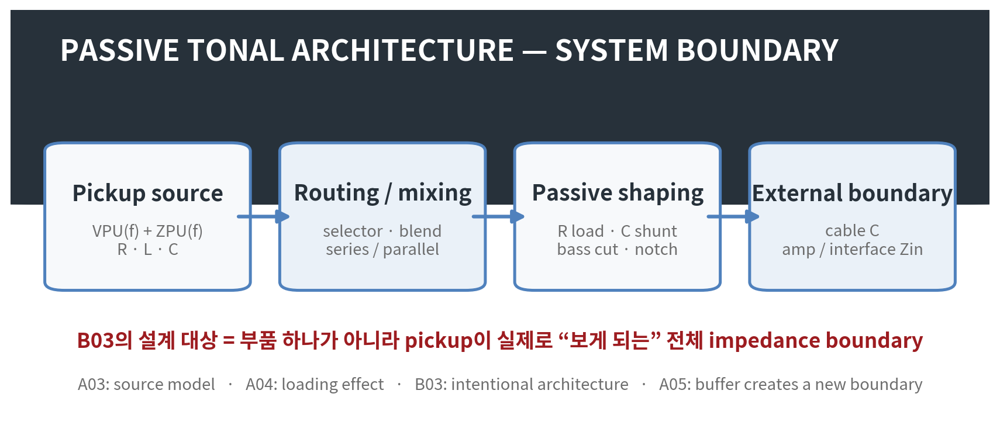
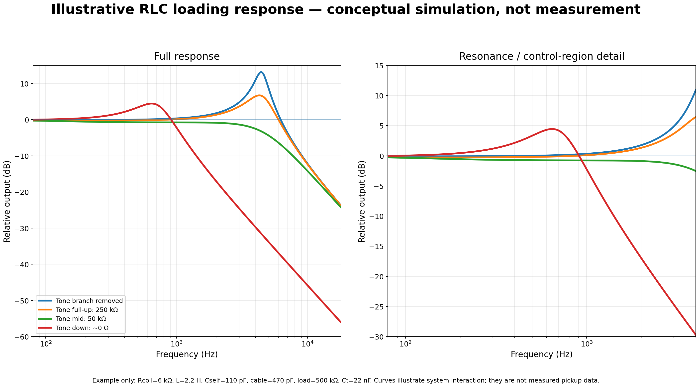
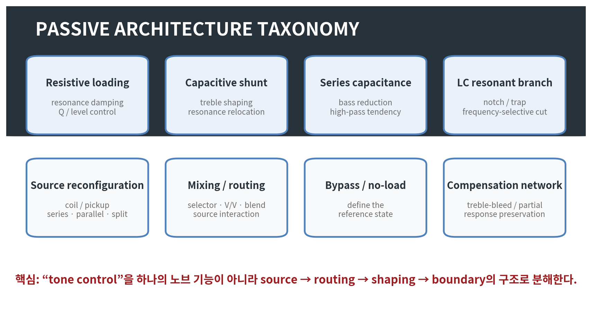
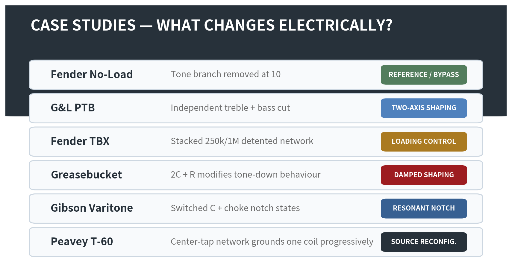
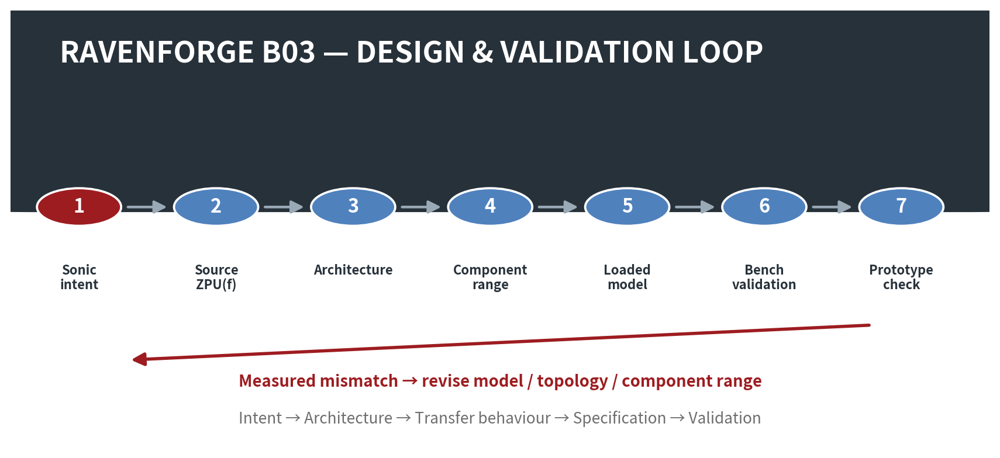

RAVENFORGE / DESIGN METHODOLOGY RESEARCH LOG — B03
RAVENFORGE
Design Methodology Research Log
B03 — Passive Tonal Architecture
부품값의 레시피가 아니라 loading · filtering · routing · reference state로 설계하는 패시브 톤 시스템
문서 목적 |
Code | B03 |
|---|---|
Focus | passive tonal architecture · controlled loading · filtering · source reconfiguration · routing · reference state |
Evidence | JAES pickup modeling · circuit theory · manufacturer service documentation · patent / historical implementation |
RavenForge link | B02 sonic intent → passive architecture → measurable response → component specification |
Upstream logs | B02 · A03 · A04 · A05 |
Downstream logs | C02 (experiment pending) · A06 · B06 · A08/C05 · A09/C06 |
Status | Literature / technical verification complete · architecture framework established · prototype measurement pending |

Figure 1. B03 system boundary. 패시브 회로의 설계 대상은 tone capacitor 하나가 아니라 pickup source부터 외부 input까지 연결된 전체 loaded system이다.
1. 연구 질문 — Passive electronics는 왜 “부품값 선택”보다 architecture의 문제인가
패시브 악기 회로는 흔히 “250 kΩ냐 500 kΩ냐”, “0.022 µF냐 0.047 µF냐” 같은 값의 선택으로 축약된다. 그러나 magnetic pickup은 zero-impedance voltage source가 아니라 R, L, winding/self capacitance를 갖는 주파수 의존 source이며, 외부의 pot, capacitor, cable, amplifier input이 그 source의 resonance와 damping을 함께 바꾼다.
따라서 같은 capacitor라도 pickup inductance, coil resistance, self capacitance, control position, cable capacitance, downstream input impedance가 달라지면 같은 응답을 보장하지 않는다. B03의 연구 질문은 “어떤 부품이 좋은가”가 아니라 “원하는 musical operation을 위해 pickup이 어떤 impedance boundary를 보게 할 것인가”이다.
B03 Core Position |
2. A03–A05와 B03의 경계 — 현상 설명에서 설계 구조로
Log | 핵심 질문 | B03과의 관계 |
|---|---|---|
A03 | pickup 자체의 RLC / ZPU(f)는 무엇인가 | source model |
A04 | 외부 R/C load가 response를 어떻게 바꾸는가 | loading mechanism |
A05 | buffer가 source와 downstream load를 어떻게 분리하는가 | new electrical boundary |
B03 | 그 load와 routing을 어떤 의도로 배치할 것인가 | design architecture |
A04가 loading의 결과를 설명했다면 B03은 loading을 설계 변수로 사용한다. 즉 conventional tone, no-load, bass-cut, notch, pickup series/parallel, blend, source reconfiguration을 “서로 다른 부품 조합”이 아니라 서로 다른 electrical operation으로 분류한다.
3. 기본 회로 모델 — 단순 RC cutoff로는 충분하지 않다
1차 근사에서 pickup은 source voltage VPU(f)와 frequency-dependent source impedance ZPU(f)로 나타낼 수 있다. 외부 network를 ZLOAD(f)라고 하면 출력은 다음과 같은 voltage-divider 관계로 표현할 수 있다.
First-order loaded-source relation |
하지만 ZPU(f) 자체가 coil resistance와 inductance, self/distributed capacitance의 영향을 받기 때문에 conventional tone capacitor를 단독 RC low-pass로 취급하는 것은 불충분하다. Tone branch, cable capacitance, volume pot과 input resistance는 pickup의 resonance frequency와 damping을 동시에 바꾼다. Paiva, Pakarinen, Välimäki의 JAES 모델 역시 magnetic pickup의 linear resonant filtering과 multiple-pickup mixing을 모델의 핵심 요소로 포함한다 [1].
Tone branch를 단순화하면 capacitor와 tone resistance가 직렬로 ground를 향하는 frequency-dependent shunt가 된다. Tone resistance가 작아질수록 capacitor가 source에 더 강하게 결합되며, pickup inductance와 결합한 새로운 저주파 resonance가 나타날 수 있다. 다만 “tone을 내리면 Q가 반드시 증가한다/감소한다”는 보편 명제는 성립하지 않는다. Q와 peak height는 전체 damping 조건에 의존한다.

Figure 2. 단순 RLC 모델의 예시 응답. 실제 측정값이 아니라 “tone cap의 효과를 독립 RC cutoff 하나로 표현하기 어렵다”는 점을 보여주기 위한 개념 시뮬레이션이다.
4. Passive Tonal Architecture — 기본 topology 분류

Figure 3. B03 topology taxonomy. Compensation network(예: treble-bleed)도 tonal architecture에 포함하되, 그것이 원 source tone을 “보존한다”는 표현은 검증 조건과 reference state가 필요하다.
심층 조사 결과, 기존 분류에 한 가지를 추가하는 편이 타당하다. Volume control 변화에 따른 HF loss를 보정하는 treble-bleed/partial compensation network는 source-loading architecture의 중요한 한 유형이므로 “compensation network”를 별도 범주로 둔다. 반대로 모든 switching을 tone circuit로 묶지 않고, 실제 source impedance나 filtering을 바꾸는 경우에만 B03의 범위에 포함한다.
5. Conventional Volume/Tone — “고역을 깎는 노브” 이상의 loaded resonant network
일반적인 tone control은 pickup output에 capacitor와 variable resistance를 이용한 shunt path를 추가한다. Tone을 내릴수록 capacitor가 ground에 더 직접적으로 연결되어 high-frequency energy가 줄어든다. 그러나 pickup이 inductive source이므로 이것은 단순 독립 1차 low-pass가 아니라 pickup RLC와 외부 C/R가 결합한 resonant network다.
따라서 “0.022 µF = humbucker, 0.047 µF = single coil” 같은 관행은 시작점일 수는 있어도 설계 법칙이 아니다. B03에서는 capacitor value를 source ZPU(f), load resistance, cable capacitance, intended endpoint와 함께 명시한다.
B03 Design Rule 01 |
6. Reference State — Full-up tone과 true bypass는 같은 상태가 아니다
표준 tone pot이 최대 위치에 있어도 finite resistance와 capacitor branch는 회로에 남을 수 있다. Fender의 250K No-Load potentiometer는 이 차이를 제조사가 명시적으로 설명하는 사례다. Fender에 따르면 1–9에서는 일반 tone control처럼 동작하고, 10에서는 tone control이 회로에서 제거된다 [2].
따라서 B03에서 “reference state”는 knob marking만으로 정의하지 않는다. Standard tone full-up, no-load detent, switch bypass, Varitone position 1처럼 실제 연결 상태를 기록해야 한다.
B03 Design Rule 02 |
7. Passive Bass Cut — G&L PTB가 보여주는 두 번째 축
Passive network는 treble만 줄일 필요가 없다. G&L은 P.T.B.를 Passive Treble & Bass Controls로 정의하며, 두 개의 tone knob로 treble과 bass를 별도로 cut할 수 있다고 공식적으로 설명한다 [3].
일반적인 passive bass-cut은 signal path에 series capacitance를 도입하고 resistance로 그 효과를 조절하는 high-pass 성향의 network로 구현할 수 있다. 하지만 실제 turnover는 capacitor 하나로 결정되지 않는다. Pickup source impedance와 downstream load가 함께 작용하므로, “C값 = cutoff”로 단독 규정하면 안 된다. 또한 knob maximum을 true bypass라고 단정하려면 해당 생산회로의 실제 schematic을 기준으로 확인해야 한다.
8. Fender TBX — 제조사 표현과 회로 해석을 분리한다
Fender의 공식 설명에 따르면 TBX는 stacked and detented 250K/1Meg potentiometer이며, 1–5에서는 standard tone control처럼 동작하고 그 이후에는 resistance가 감소하면서 더 많은 bass, treble, presence, output이 amp로 전달된다고 설명한다 [4].
여기서 “output이 증가한다”를 active gain으로 번역하면 안 된다. TBX에는 battery나 powered gain stage가 없으므로 active power gain이 아니다. 정확한 frequency response와 loading 변화는 Fender wiring diagram의 연결 관계와 pickup/load 조건을 함께 해석해야 하며, “6–10에서 pickup이 무조건 더 낮은 impedance를 본다” 같은 단순화도 피해야 한다.
Passive “boost” wording |
9. Fender Greasebucket — push/pull 회로가 아니라 2C + R tone network
심층 조사 초안의 “push-pull로 Greasebucket을 on/off한다”는 서술은 표준 Greasebucket topology의 필수 요소가 아니므로 삭제한다. Fender의 American Special service diagram에는 0.100 µF capacitor, 0.02 µF capacitor와 4.7 kΩ resistor가 tone control 주위에 배치된 Greasebucket network가 명시되어 있다 [5].
제조사 마케팅 문구는 tone을 내릴 때 highs를 줄이면서 bass를 “추가하지 않는다”는 목표를 제시한다. 회로적으로는 0.1 µF cap과 0.022 µF + 4.7 kΩ network가 standard tone의 endpoint resonance/damping을 바꾼다고 보는 편이 안전하다. 이를 “highs와 lows가 동시에 일정 비율로 잘리는 band-pass”라고 단정하는 것 역시 과도한 단순화다. 정확한 curve는 source/load 조건 아래에서 시뮬레이션 또는 측정해야 한다.
10. Gibson Varitone — switched resonant notch architecture
Gibson의 공식 archival 설명은 Varitone을 notch filter로 설명한다. Position 1은 true bypass이고, positions 2–6은 capacitor를 선택해 특정 frequency range를 제거한다. 전통적인 구성에서는 1.5 H choke를 사용하며 1000 pF, 3000 pF, 0.01 µF, 0.03 µF, 0.22 µF 등 서로 다른 capacitor state를 제공한다고 설명한다 [6].
이상적인 LC resonance는 f0 ≈ 1 / (2π√LC)로 근사할 수 있지만 실제 notch depth와 Q, insertion loss는 inductor winding resistance, capacitor tolerance, pickup impedance와 volume/load condition에 의존한다. 따라서 “Varitone position 3 = 항상 특정 Hz” 같은 고정값보다 system-dependent notch로 다루는 것이 정확하다.
11. Peavey T-60 — tone control이 source topology를 바꾸는 사례
US Patent 4,164,163은 center-tapped dual-coil pickup과 capacitor/potentiometer network를 이용해 pickup의 resonant frequency 자체를 변화시키는 회로를 설명한다 [7]. Patent description에 따르면 full-bass position에서는 full double-coil humbucking pickup으로 동작하며 낮은 resonant frequency를 갖고, control을 treble 방향으로 움직이면 한 coil이 점진적으로 ground되어 resonant frequency가 상승한다. Extreme treble에서는 사실상 single-coil state에 접근한다.
이 사례의 핵심은 “tone control = pickup 뒤의 filter”라는 가정을 깨는 데 있다. 하나의 control이 source topology와 frequency response를 동시에 바꿀 수 있다. 다만 coil-series/parallel/split의 일반화된 전기적 분석은 A08/C05에서 별도로 다룬다.
12. Pickup Mixing — 단순 voltage summing이 아니다
두 pickup을 연결하는 것은 두 개의 독립 track을 이상적으로 더하는 것과 다르다. 각 pickup은 유한하고 frequency-dependent한 source impedance를 갖기 때문에 selector, dual-volume, blend, master-tone network에서 서로와 공통 load를 상호 로드할 수 있다. Paiva 등의 모델은 multiple pickups와 series/parallel connection을 포함한다 [1].
동일하고 상호결합을 무시할 수 있는 두 coil에 대한 단순 근사에서는 series 연결 시 R과 L이 증가하고, parallel 연결 시 equivalent R/L이 감소한다. 그러나 실제 pickup 간 위치, winding 차이, distributed capacitance와 magnetic coupling 때문에 이 단순 등가값을 모든 pickup 조합에 그대로 적용하지 않는다. “series = 무조건 어둡다 / parallel = 무조건 밝다”보다 실제 Z(f)와 loaded response를 측정하는 것이 B03의 원칙이다.
13. Case Study Map — 브랜드 회로는 ‘정답’이 아니라 architecture 사례다

Figure 4. 검증된 사례의 electrical operation 분류. 특정 브랜드 회로를 우열 비교하기보다, 서로 다른 passive operation이 실제 양산/특허 회로에서 구현되었다는 증거로 사용한다.
Case | Primary operation | Reference state | Evidence level |
|---|---|---|---|
Fender No-Load | tone branch removal | 10 = branch removed | Strong / official |
G&L PTB | independent treble/bass cut | model-specific | Strong / official function |
Fender TBX | stacked detented loading network | 5 = center detent | Strong / official function; transfer needs circuit analysis |
Greasebucket | modified tone-down damping / shaping | standard full-up remains loaded | Strong topology / official service diagram |
Gibson Varitone | switched resonant notch | position 1 = true bypass | Strong / official archival |
Peavey T-60 | progressive coil grounding + resonance shift | full humbucker ↔ near single-coil | Strong / patent |
14. Capacitor Type — electrical parameter와 marketing identity를 분리한다
B03에서 capacitor는 우선 capacitance, tolerance, leakage, ESR, parasitic behaviour, stability, physical reliability로 평가한다. “PIO”, “Orange Drop”, “Vitamin Q”, “ceramic” 같은 이름 자체를 독립적인 tone parameter로 취급하지 않는다.
Audio capacitor의 비이상성과 distortion을 다룬 AES 연구는 존재하지만, loudspeaker crossover나 DC-biased preamp처럼 다른 voltage/current/bias 조건에서 얻은 결과를 수십~수백 mV 수준의 passive guitar pickup network에 곧바로 일반화할 수는 없다. Passive guitar 회로에서 dielectric/brand 우월성을 주장하려면 capacitance와 tolerance를 맞춘 controlled electrical/level-matched comparison이 필요하다.
RavenForge component rule |
15. Control Law와 Tolerance — nominal value만 기록하지 않는다
같은 250 kΩ pot이라도 taper, actual end-to-end resistance, wiper law가 다르면 knob position과 electrical state의 관계가 달라진다. Capacitor tolerance 역시 resonance/notch 위치를 이동시킬 수 있다. B03의 specification에는 nominal value 외에 measured value, tolerance, taper, reference position을 함께 기록한다.
Variable | 기록 항목 | 설계 영향 |
|---|---|---|
Potentiometer | actual resistance · taper · wiper position | loading · control law · endpoint |
Capacitor | measured C · tolerance | resonance / notch / transition |
Inductor | L · winding R · tolerance | notch frequency · Q · insertion loss |
Cable | total capacitance (pF) | pickup resonance / HF response |
Input | Rin · Cin | effective load / damping |
Switch / routing | contact topology · state definition | reference state / source interaction |
16. RavenForge Passive Architecture Design Workflow

Figure 5. B03 design-validation loop. 부품에서 시작하지 않고 sonic intent와 source model에서 architecture를 도출한 뒤, 실제 측정으로 다시 topology 또는 component range를 수정한다.
Stage | 질문 | Output |
|---|---|---|
1. Sonic intent | 무엇을 음악적으로 바꾸려는가 | target operation |
2. Source definition | ZPU(f)는 어떤가 | source model |
3. Reference state | 무엇을 unfiltered / baseline으로 볼 것인가 | electrical reference |
4. Architecture | load / shunt / series / notch / routing 중 무엇인가 | topology |
5. Control law | knob / switch가 어떤 electrical state를 만드는가 | R/C/L range + taper |
6. Full-system model | cable과 input까지 포함하면 어떻게 되는가 | loaded transfer |
7. Interaction check | 다른 pickup/control state와 충돌하는가 | state matrix |
8. Bench validation | 모델과 실제 network가 일치하는가 | measured response |
9. Prototype validation | 연주 상황에서 intended action과 맞는가 | design decision |
17. Interaction Matrix — knob 하나를 고립시켜 평가하지 않는다
패시브 architecture에서는 interaction이 본질적이다. 따라서 tone knob의 endpoint만 측정하는 대신 pickup selection, source topology, volume position, tone/bass/notch state, cable capacitance, input impedance, buffer boundary를 matrix로 기록한다. 다만 B03 문서에는 특정 pickup에 대한 “warm / muddy / tele-like” 같은 주관적 결과를 미리 써 넣지 않는다. 그것은 실제 C-series 측정과 listening validation 뒤에 기록해야 한다.
Variable | Example states | Primary reason |
|---|---|---|
Pickup | N / B / N+B | different source Z and sampled string spectrum |
Source topology | series / parallel / split | source impedance / level / resonance |
Volume | 100 / 75 / 50 / 25% | pot loading and divider interaction |
Treble control | max / mid / min | shunt strength / resonance change |
Bass control | max / mid / min | series-capacitive attenuation |
Notch rotary | all detents | selected resonant branch |
Cable | measured pF states | capacitive load |
Input | representative high-Z loads | resistive damping |
Buffer | bypass / engaged | new source/load boundary |
18. Validation Protocol — electrical network와 magnetic transduction을 분리한다
심층 조사 초안의 “실제 pickup output terminal에 단순 voltage sweep를 걸어 pickup response를 측정한다”는 표현은 목적을 명확히 분리해야 한다. Pickup 단자에 외부 전압을 인가하는 것은 passive network/impedance characterization에는 사용할 수 있지만, string-to-voltage magnetic transduction 자체를 재현하는 것은 아니다.
18.1 Layer A — Electrical source / network validation
Known R-L-C source fixture 또는 측정된 pickup equivalent model을 사용해 passive topology 자체의 transfer function을 검증한다. 실제 component value와 load를 측정하고, 20 Hz–20 kHz sweep에서 magnitude/phase를 기록한다.
18.2 Layer B — Pickup impedance / loading validation
C02에서 정의한 방법처럼 known series resistor와 high-Z measurement path를 사용해 pickup Z(f)를 측정하고, controlled R/C matrix에서 loaded response를 비교한다. Measurement input 자체의 Rin/Cin을 기록하거나 de-embed해야 한다.
18.3 Layer C — Magnetic excitation / ecological validation
실제 pickup의 magnetic transfer까지 검증하려면 fixed excitation coil 또는 반복 가능한 string excitation이 필요하다. 전자는 drive-current-referenced Hmag(f)를 얻는 데 유리하고, 후자는 실제 연주 조건에 가깝지만 반복성 통제가 어렵다. B03은 Layer A의 architecture validation을 정의하고, Layer B/C는 C02 및 후속 prototype validation으로 넘긴다.
Measurement rule |
19. Claim-by-Claim Evidence Matrix
Claim | Assessment | 근거/수정 |
|---|---|---|
Tone capacitor value alone determines cutoff | Incorrect / oversimplified | pickup Z(f)와 전체 load가 함께 결정 |
Tone-down always raises Q | Incorrect as a universal claim | Q/peak depend on total damping; use measured/modelled response |
Full-up standard tone = bypass | Not necessarily | No-Load case demonstrates distinction |
Passive bass cut is possible | Supported | G&L PTB and circuit theory |
TBX is an active boost | Incorrect | passive 250K/1M network; describe relative output/loading |
Greasebucket requires push/pull | Incorrect | official service diagram shows fixed 2C + R network |
Greasebucket is simply a band-pass filter | Too simplified | source-dependent modified tone network; measure/model endpoint |
Varitone is a switched notch architecture | Supported | Gibson official archival description |
T-60 progressively grounds one coil | Strongly supported | US4164163 patent |
Pickup mixing is electrically neutral | Incorrect | finite Z sources interact through shared load |
Series/parallel coloration can be modeled | Supported with assumptions | Paiva et al.; real pickup deviations remain |
Expensive dielectric guarantees superior passive tone | Not established | matched-value controlled evidence required |
More controls = greater usable tonal range | Not established | interaction/discoverability and reference states matter |
20. 현재 결론 — Passive는 “단순한 기본 회로”가 아니다
Passive magnetic pickup은 downstream network와 직접 상호작용하므로, battery가 없다는 사실은 architecture가 단순하다는 뜻이 아니다. 오히려 buffer가 없는 상태에서는 routing과 control network가 pickup의 own resonant response를 직접 구성한다.
RavenForge B03 Position |
따라서 RavenForge의 traceability는 다음 순서를 따른다.
Design traceability |
21. Boundary of B03 / Next Research
Code | 다음 질문 | B03에서 넘기는 항목 |
|---|---|---|
C02 | Pickup Loading Measurement | 실제 R/C load matrix와 buffer control — 현재 experiment pending 유지 |
A06 | Onboard Preamp Architecture | buffer 이후 low-Z domain, active gain/EQ, headroom |
B06 | Rethinking the Internal Signal Path | passive/active blocks와 physical routing 통합 |
A08 / C05 | Coil Topology | series / parallel / split의 상세 전기적·실측 비교 |
A09 / C06 | Multi-Pickup Phase Interaction | spatial phase / cancellation / comb filtering |
Master schedule상 B03 다음 활성 회차는 A06 — Onboard Preamp Architecture다. B03이 source와 load를 직접 연결한 passive domain의 설계를 정리했다면, A06은 buffer가 새로운 electrical boundary를 만든 이후 impedance conversion, gain, EQ, headroom을 어디에 배치할 것인지 다룬다.
References
[1] Paiva, R. C. D.; Pakarinen, J.; Välimäki, V. “Acoustics and Modeling of Pickups.” Journal of the Audio Engineering Society 60(10), 768–782 (2012). AES E-Library ID 16551.
[2] Fender Musical Instruments. “250K No-Load Split/Solid Shaft Potentiometer.” Official product documentation: tone control operates normally from 1–9 and is removed from circuit at 10.
[3] G&L Musical Instruments. “P.T.B. (Passive Treble & Bass) System.” Official technical description: treble and bass frequencies can be separately cut via two passive tone controls.
[4] Fender Musical Instruments. “TBX Tone Control Potentiometer Kit.” Official product documentation: stacked/detented 250K/1Meg control; standard tone operation 1–5, alternate resistance behaviour above detent.
[5] Fender Musical Instruments Corporation. American Special Stratocaster / Telecaster Service Diagrams (2009). Greasebucket tone circuit: 0.100 µF capacitor plus 0.02 µF capacitor and 4.7 kΩ resistor network.
[6] Gibson Brands. “Vary Your Tone With The Varitone Switch!” (2017 archival technical article). Position 1 bypass; positions 2–6 switched notch states using capacitor selection and 1.5 H choke.
[7] Rhodes, O. J.; Peavey Electronics Corp. US Patent 4,164,163, “Electric Guitar Circuitry.” Filed 1977; granted 1979. Center-tapped dual-coil circuit with progressive coil grounding and resonant-frequency change.
[8] Dodds, P.; Duncan, P.; Williams, N. “Audio Capacitors. Myth or Reality?” AES 124th Convention, Paper 7314 (2008). Used only for the general existence of capacitor nonidealities in audio applications, not as direct proof of guitar tone-cap audibility.
[9] Gaskell, R.-E. “Capacitor ‘Sound’ in Microphone Preamplifier DC Blocking and HPF Applications.” AES 130th Convention, Paper 8350 (2011). Application conditions differ from passive pickup tone networks.
[R1] RavenForge B02 — Voicing Before Specification.
[R2] RavenForge A03 — Magnetic Pickups as RLC Systems.
[R3] RavenForge A04 — Electrical Loading of Passive Pickups.
[R4] RavenForge A05 — Active Buffers and Input Impedance.
Source-status note |